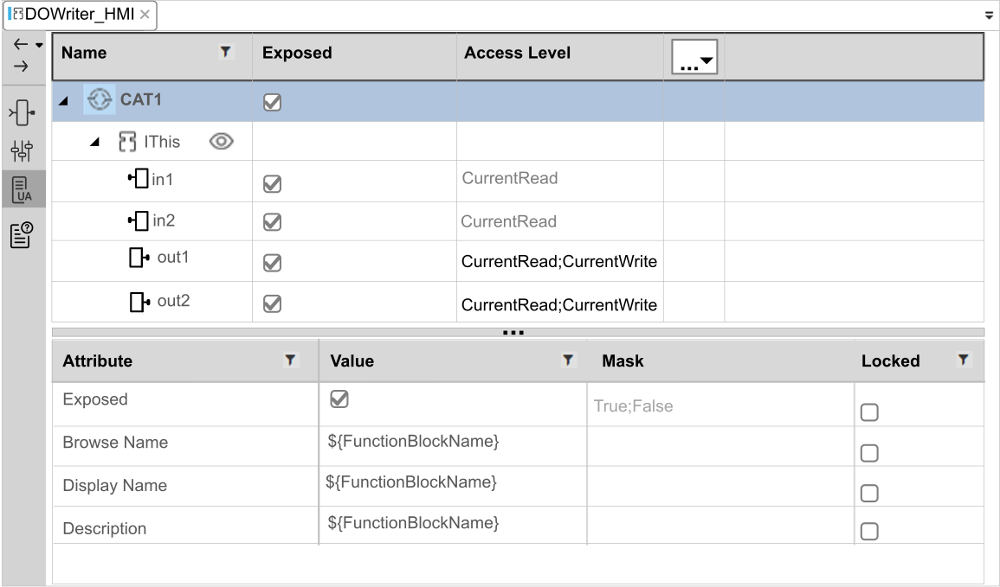

OPC UA Server Editor
Use the OPC UA Server editor to configure and display OPC UA communication variables and their attributes. OPC UA variables are shared, or common, with HMI function block interface definitions. Only variables associated with a valid event in the Function Block Interface editor can be shared between an OPC UA server and client.
Displaying the OPC UA Server Editor
To display the OPC UA Server editor:
-
Open the System editor.
-
Click the OPC UA Server icon in the vertical toolbar on the left.
OPC UA Server Editor
The editor is divided into two parts:
-
Variable list, of input variables (InputVars) and output variables (OutputVars), located at the top of the editor.
-
Attribute list, for the variable selected in the variable list, located at the bottom of the editor.

The OPC UA Server editor can be accessed at the application, function block, and HMI object levels.
When accessed at the application or function block levels, the Exposed check box of the parent item is selected by default and all child items are visible and can be edited. If the Exposed check box of the parent item is deselected, its child items are locked and can longer be edited.
Variable List (data points)
By default, the variable list presents the Name, Exposed and Access Level attribute settings for each variable. To display different attributes than the default ones, click on the drop down menu available in the most right column of the variable list. Then select and deselect the wanted attributes.
The variables are transmitted to the connected OPC UA client if exposed. The OPC UA client then accesses to all exposed variables and orders them with the same hierarchy as in the Variable list.
Even though it doesn’t transfer variable information, IThis line will still be visible in the CAT instances and the connected OPC UA client hierarchy as it is by default set to visible ().
As this IThis line doesn’t give information, it can also be hidden from the hierarchies. To hide it, two actions are required:
-
Set the parameter OPC UA Server to String. This parameter is accessible with the following path: .
-
Click on the visibility icon in the OPC UA Server editor of the CAT (
 ).
).
Doing this will then hide the IThis line. Thus, all its variables are brought at the previous IThis hierarchy level and IThis won’t be mentioned anymore in the OPC UA path either.

|
To learn more about how to create OPC UA variables in EcoStruxure Automation Expert, watch How to Create OPC UA Variables. |
Attribute List
The attribute list displays the attributes of the selected variable. Default attribute settings appear in normal text. Non-default, i.e., changed, settings appear in bold. The following attributes can be configured:
|
Attribute |
Description |
|---|---|
|
Exposed |
Allows connected OPC UA clients to access this variable. The user can choose by default between this set of values:
In the Mask column, turn off one of these values to remove it from the set of values available. After instantiating the function block type, only the values still selected in the Mask column will be available for the user. If the Locked setting is selected, the attribute value cannot be further overparameterized. |
|
Access Level |
Determines the privileges granted to an OPC UA client if this variable is exposed. The user can choose by default between this set of values:
In the Mask column, turn off these values to remove them from the set of values available. After instantiating the function block type, only the values still selected in the Mask column will be available for the user. If the Locked setting is selected, the attribute value cannot be further overparameterized.
NOTE: For more explanation about these attributes, check the official OPC UA specification document here.
|
|
Browse Name |
The text string the server shows in a browse sequence when the variable is exposed.. Default = ${VariableName} |
|
Display Name |
The text string the server displays when the variable is exposed.. Default = ${VariableName}. |
|
Minimum Sampling Interval |
The minimum time, in milliseconds, applied by the OPC UA server when sampling this variable value. |
|
Description |
A memo field. Default value is the description coming from the Interface definition = ${VariableComment}. |
Creating a Connection Between an OPC UA Server and an OPC UA Client
The following steps describe the sequence of tasks you can use to create variables in EcoStruxure Automation Expert, then create a connection between an OPC UA server and OPC UA client so the client can access these variables.
|
Step |
Action |
|---|---|
|
1 |
In the Solution Explorer pad, for a distributed PAC Project, expand the CAT node, then right click the Application node and select New Item from the menu. |
|
2 |
In the CAT Definition dialog, add a CAT name, for example |
|
3 |
In the Solution Explorer pad, under the new CAT name node, select the CAT_HMI node. Either double-click the node or right-click and choose Open from the context menu. |
|
4 |
In the Function Block Interface editor for CAT_HMI, create data points, events, and associations:
NOTE: Before you create data points, verify that you are working in the Interface editor for the CAT_HMI and not for the parent CAT.
|
|
5 |
With the CAT_HMI tab still selected, open the OPC UA Server editor and select a variable in the Variable List (top part of the editor) to display its attributes in the Attribute List (bottom part of the tab). Make the desired configuration edits for the attributes. For example, select Exposed for each variable you want to share with OPC UA clients. By default, OPC UA variables are not shared. Save your edits by right-clicking on the tab and choosing Save All.
NOTE: The variables in the top part of the tab are grayed-out when:
|
|
6 |
Instantiate the HMI block to link OPC UA data and populate the OPC UA server node set:
NOTE: Steps 1...6 describe the configuration of the OPC UA function block object.
|
|
7 |
The next step is to perform IEC61499 application instantiation for the OPC UA function block object you have created as follows:
|
|
8 |
The next step is to perform IEC61499 information mapping to link the new CAT function block to the appropriate device:
|
|
9 |
Build the application: select (or ). |
|
10 |
Deploy the application, as follows:
NOTE: It is recommended that you first operate in simulation mode to test your design. When you are satisfied the design works as intended, return to this setting and select (Default) for online operations.
Other actions to take to complete deployment may include: |
|
11 |
The next steps are:
Both of these tasks are performed from the OPC UA client side. Refer to the instructions for your client application for information on how to perform these tasks. |
Bulk Editing the Exposed Attribute of OPC UA CAT Variables
The bulk editing feature lets you edit - in one place - the Exposed attribute value for OPC UA variables associated with one or more composite automation types (CATs) and their SubCATs. This feature saves you the time that would otherwise be spent individually editing the Exposed attribute value for each CAT/SubCAT instance.
Bulk editing of the OPC UA variable Exposed attribute can be performed in the System editor at either the application or the CAT level. If you perform bulk editing at the:
-
Application level: all OPC UA variables for all CATs and their SubCATs associated with the selected application are added to the file and are available for editing.
-
CAT level: only OPC UA variables for the selected CAT and its SubCATs can be edited.
Bulk editing involves the following tasks:
-
Export an .xlsx or.csv file listing OPC UA variables associated with CATs and their SubCATs.
-
Edit the Exposed attribute for one or more of the variables in the file.
-
Import the edited variable file.
Before the file is imported, EcoStruxure Automation Expert validates the proposed edits. If the file to be imported is:
-
Invalid: EcoStruxure Automation Expert displays a message indicating the bulk editing process will be aborted, and the reason is displayed in the Output pad.
-
Valid: EcoStruxure Automation Expert indicates the process completed successfully.
To perform bulk editing of OPC UA CAT variables:
-
In the System editor, open the application or the CAT:
-
For an application: in the Solution Explorer navigate to then double-click on the application.
-
For a CAT, in the Solution Explorer navigate to and double-click on a CAT.
-
-
Open the OPC UA Server editor.
-
Click the Export icon . The Export Excel dialog opens.
-
In this dialog, type in a Name and select a Save as type, .csv or .xlsx.
-
Click Save. The selected file type opens, displaying settings for two columns:
-
Name: The full path name of each OPC UA variable.
-
Exposed: The Exposed attribute value (Y = exposed, N = Not exposed).
-
-
Edit the Exposed column for each variable you want to change to exposed or not exposed and save your changes.
NOTE:-
You can delete rows that you do not intend to change. EcoStruxure Automation Expert will not make edits for non-edited rows or for deleted rows.
-
You cannot:
-
Change the Exposed attribute to a value other than Y or N, or leave the value blank.
-
Change a column name.
-
Delete or rename the OPC UA sheet (In Excel).
-
Add a new row with a new attribute.
-
Add a duplicate row.
EcoStruxure Automation Expert aborts the process if it encounters these changes.
-
-
-
In the OPC UA Server editor, click the Import icon . The Import Excel dialog opens.
-
Select the appropriate file of type (.csv or.xlsx), then navigate to and Open the previously exported and edited file. EcoStruxure Automation Expert validates the specified file and informs you if the file is valid or invalid.
-
If the file is:
-
Valid: the Message Log indicates the process completed successfully.
-
Invalid: the process aborts and the cause is displayed in the Output pad.
-